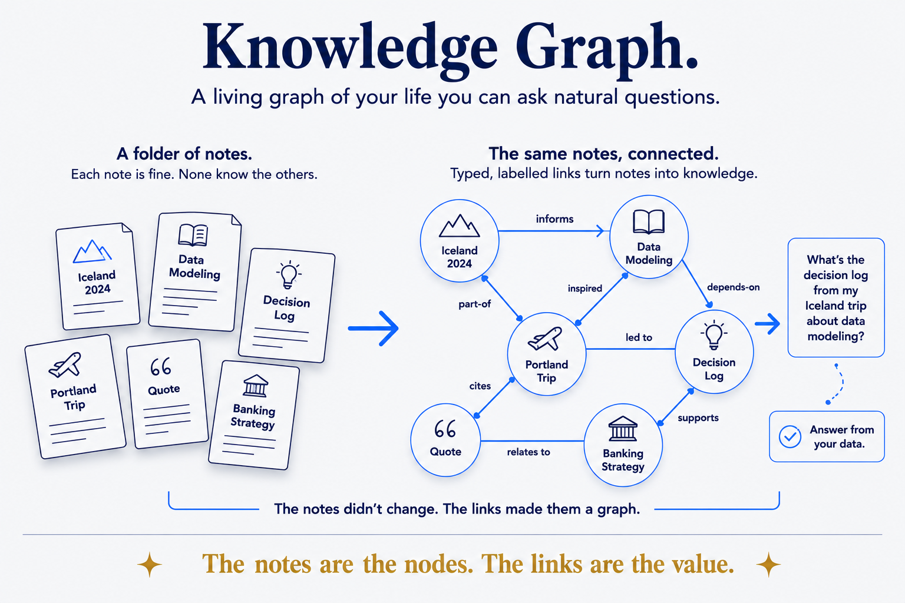

A living graph of your life you can ask natural questions.

People, places, trips, events and interests, all connected — a living knowledge graph you query in natural language and that answers from your structured data, not a guess.
The notes didn't change; the links made them a graph. That's the whole move, and it's smaller than it sounds. A folder of good notes is a folder of good notes: each one fine, none aware of the others. Add real links between them and the same files become something a question can travel — from a trip, to the people on it, to what they said, to the decision it led to.
What makes those links worth anything is that they're typed. An edge that says nothing — "these are related, somehow" — leaves a machine exactly where it started: it can see two things are connected while having no idea how. An edge that declares itself (cites, part-of, depends-on, supersedes) can be reasoned over. Meaning in the structure, not in the prose beside it.
Which is why the answer differs in kind, not just in quality. Ask a pile of notes a question and the best you get is retrieval — here are some documents that mention this. Ask a graph and it can follow the relationships you declared and answer from what's actually true in your data, rather than producing something plausible.
The honest limit: a graph is only as good as the links you actually made. Nobody hand-links a decade of notes, and an auto-generated hairball is not understanding — it's a picture of one. Link deliberately, where the connection means something.